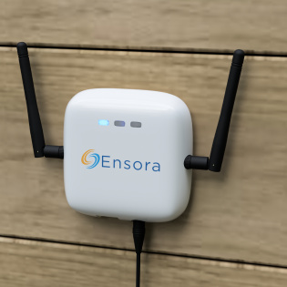

<div class="modal modal-vcenter fade" id="exampleModal" tabindex="-1" role="dialog"
aria-labelledby="exampleModalLabel" aria-hidden="true">
<div class="modal-dialog" role="document">
  <div class="modal-content">
    <div class="modal-header">
      <button type="button" class="close" data-dismiss="modal" aria-label="Close">
        <span aria-hidden="true">&times;</span>
      </button>
    </div>
    <div class="modal-body d-flex flex-column align-items-center">
      <p class="text-center modal-text">
        Get started by installing an<br>
        Ensora automation box or gateway.
      </p>
      <div class="popup-image">
        
      </div>
    </div>
    <div class="modal-footer d-flex justify-content-center">
      <button type="button" class="btn btn-primary" data-dismiss="modal">
        Next
      </button>
    </div>
  </div>
</div>
</div>